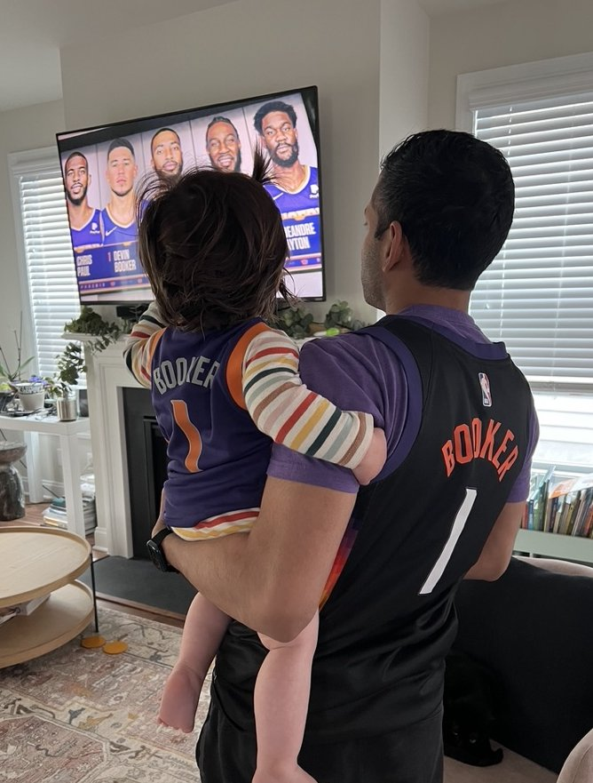
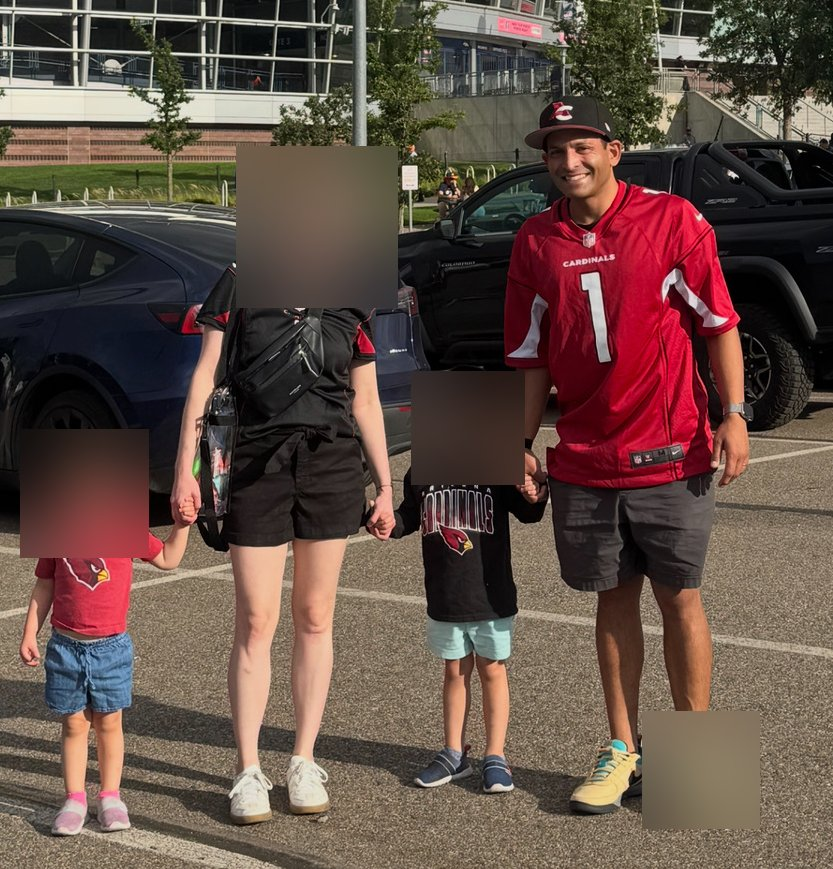
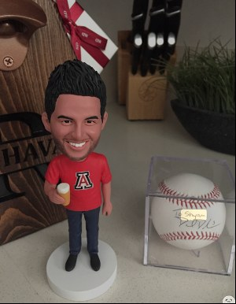
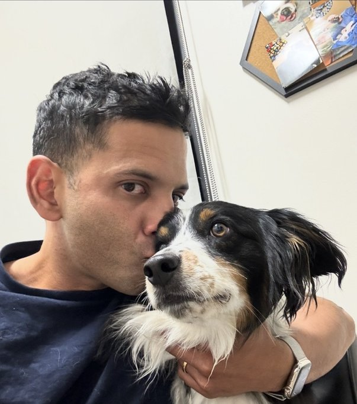
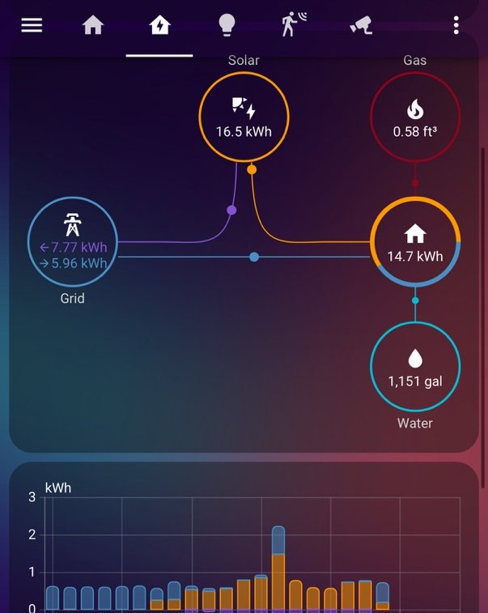

Hello, I'm
Pathologist · Technologist/Informaticist · Arizona Sports Fan
Physician by training, technologist by hobby.
I'm a physician-scientist at the University of Colorado School of Medicine (CU Anschutz Medical Campus), where I serve as an Associate Professor of Pathology. I specialize in dermatopathology and gastrointestinal pathology, with board certification in both anatomic pathology and dermatopathology. I recently completed a Certificate in Clinical Informatics from Johns Hopkins, blending my clinical and technical interests.
My research focuses on the molecular basis of melanocytic neoplasms, PRAME immunohistochemistry, challenging melanocytic lesion consultation, and rare tumors of the skin and GI tract. I've published over 77 peer-reviewed papers, authored book chapters in Mills & Sternberg's Diagnostic Surgical Pathology, and serve as an Assistant Editor at the American Journal of Clinical Pathology.
Outside the microscope, when I'm not spending time with my wife and kids, I'm a technologist at heart — I build AI agents, tinker with smart home systems, and write code to automate anything that stands still long enough. Other than that, I'm a tortured Arizona sports fan.
Melanocytic neoplasms, PRAME expression, GI pathology, soft tissue tumors
LLM-powered agents, smart home systems, clinical informatics
Machine learning in pathology, sports analytics, prediction models

Tortured but loyal — Wildcats, Suns, Cardinals, D-backs. Dynasty fantasy football league commissioner.



Johns Hopkins University
Stanford University Hospital
Stanford University Hospital · Chief Resident
Stanford University Hospital
University of California San Francisco
Stanford University School of Medicine
Massachusetts Institute of Technology
Robert Haslem Cup (top ChemE graduate) · Phi Sigma Kappa
University of Colorado School of Medicine
University of Virginia School of Medicine
American Board of Pathology and Dermatology
American Board of Pathology
American Board of Pathology
77 peer-reviewed publications · 3 book chapters · 30+ presentations
Pediatric Acral Melanoma With a Novel ARL6IP1-PRKCB Fusion.
J Cutan Pathol. 2026.
Beyond Classic Leukemia Cutis: Evidence of Leukemic Cell "Spillover".
J Cutan Pathol. 2026;53(2):180-185.
Unmasking a Persistent Rash.
Am J Dermatopathol. 2025;47(11):896-897.
Response to Expanding Insights Into PRAME Expression in Merkel Cell Carcinoma.
Am J Surg Pathol. 2025;49(6):637-638.
PRAME Expression in Merkel Cell Carcinoma.
Am J Surg Pathol. 2024.
Machine-learning-based integrative -'omics analyses reveal immunologic and metabolic dysregulation in environmental enteric dysfunction.
iScience. 2024;27(6):110013.
Desmoplastic stromal signatures predict patient outcomes in pancreatic ductal adenocarcinoma.
Cell Rep Med. 2023;101248.
Malignant undifferentiated and rhabdoid tumors of the gastroesophageal junction and esophagus with SMARCA4 loss: a case series.
Hum Pathol. 2023;134:56-65.
Immunohistochemistry in melanocytic lesions: Updates with a practical review for pathologists.
Seminars in Diagnostic Pathology. 2022;39(4):239-247.
Targeting oxidized phospholipids by AAV-based gene therapy in mice with established hepatic steatosis prevents progression to fibrosis.
Sci Adv. 2022;8(28):eabn0050.
Spitz melanoma is a distinct subset of spitzoid melanoma.
Mod Pathol. 2020;33(6):1122-34.
PRAME expression in melanocytic proliferations with intermediate histopathologic or spitzoid features.
J Cutan Pathol. 2020;47(12):1123-31.
Diffuse PRAME expression is highly specific for malignant melanoma in the distinction from clear cell sarcoma.
J Cutan Pathol. 2020;47(12):1226-8.
Three chapters in Mills & Sternberg's Diagnostic Surgical Pathology, 7th Edition (Lippincott Williams & Wilkins) — covering non-neoplastic GI diseases, melanocytic lesions, and non-melanocytic cutaneous tumors.
A personal AI agent built via OpenClawd that manages email, calendar, smart home, and daily workflows. Built with LLMs, custom tooling, and way too many API integrations.

An extensive Home Assistant setup with Zigbee devices, Frigate NVR for camera AI, solar monitoring, and automations for lighting, climate, security, and everything in between.
NBA betting models, prediction systems, and data pipelines. Python and pandas for data wrangling, scikit-learn for modeling. Because even sports fandom deserves a quantitative approach.
If it can be automated, it will be. From clinical workflows to home infrastructure — always looking for the next thing to streamline.
Whether it's pathology, tech, or Arizona sports takes — I'm always happy to connect.
Or talk to my AI assistant: